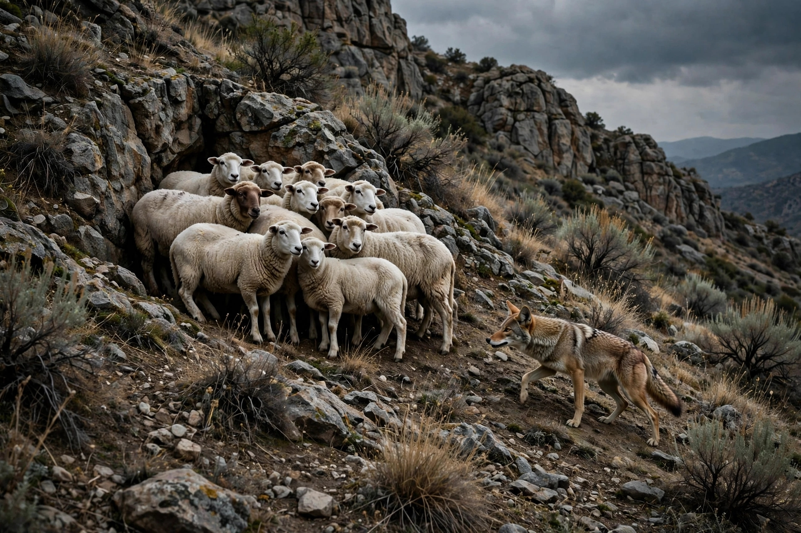

A realidade que se descortina nos bastidores do evangelicalismo contemporâneo há anos opera como uma engrenagem de corrosão sistemática da fé genuína. Este capítulo ergue-se como uma denúncia implacável contra o sistema predatório que transformou a comunidade de fé em um campo de exploração corporativa. Navegar por esse ecossistema significa habitar um território cercado por lobos vorazes e tubarões institucionais, onde o rebanho, outrora pastoreado com abnegação, foi relegado à condição de mera matéria-prima para a geração de lucros e sustentação de castas privilegiadas.
O contraste entre a simplicidade apostólica exigida pelo Evangelho e a opulência obscena da cúpula religiosa revela um desvio colossal. Enquanto Cristo ordenou aos Seus enviados que não levassem bolsas, alforjes ou mudas excessivas de vestes, fixando residência na hospitalidade singela daqueles que os acolhiam (Lucas 10:4,7), e testemunhou a própria condição de penúria ao declarar que "o Filho do Homem não tem onde reclinar a cabeça" (Mateus 8:20), a liderança moderna institucionalizou o luxo nababesco. Aniversários elitizados regados a presentes faustosos, festas faraônicas e comitivas de segurança contrastam violentamente com a sobriedade de quem foi chamado para servir ao Reino eterno.
O modelo corporativo que se padronizou no seio evangélico assimilou as piores práticas do capitalismo selvagem. Dirigentes, pastores auxiliares e obreiros de campo são submetidos a um regime de metas de arrecadação implacáveis, cobranças de produtividade e sufocamento financeiro, assemelhando-se a um sistema escravocrata disfarçado de piedade. Enquanto os tubarões do alto escalão acumulam vencimentos milionários, jatos corporativos e patrimônios faraônicos em detrimento da pureza da Fé, as famílias dos obreiros locais submergem em penúria, enfrentando abismos gritantes de desigualdade na qualidade de vida.
Essa disparidade revoltante foi amplamente denunciada por vozes proféticas da história da Igreja. O pastor e evangelista David Wilkerson, em seus severos alertas registrados em obras clássicas como O Despertar de David Wilkerson e em suas preces contundentes contra a apostasia moderna, fustigava sem piedade os mercenários do púlpito que usavam o ministério como trampolim para a riqueza material, abandonando o temor a Deus e a compaixão pelos oprimidos.

É fundamental esclarecer que esta literatura não pretende, em hipótese alguma, incentivar o desmerecimento de uma vida digna para quem serve no altar. As Escrituras Sagradas estabelecem com clareza cristalina que quem planta deve ser o primeiro a participar dos frutos, e que o obreiro é digno do seu salário (1 Coríntios 9:7-14; 1 Timóteo 5:18). A Bíblia repudia a exploração do trabalhador da seara.
No entanto, há um abismo intransponível entre o sustento digno e o enriquecimento exacerbado, a ostentação desmedida e a exploração sistemática da base. Quando a liderança desfruta de luxos principescos enquanto seus subordinados vivem à míngua, o ministério deixa de ser sacerdócio e converte-se em corporação de exploração. Como parafraseou o apóstolo Paulo diante das agruras e do descarte infligido pelos falsos sábios de sua época, os servos fiéis muitas vezes têm sido tratados como "a escória deste mundo e como o lixo de todos" (1 Coríntios 4:13).
Portanto, esta obra assume o compromisso irrevogável de ser uma voz ativa de denúncia e, no mínimo, de conscientização e incentivo. Os cristãos foram redimidos pelo sangue do Cordeiro para exercerem a sublime vocação de ovelhas do Supremo Pastor, e não de presas nas garras e dentes afiados desses predadores travestidos de líderes espirituais. Despertar desse torpor é questão de sobrevivência espiritual. A verdade liberta, e a justiça de Deus permanece atenta ao clamor dos explorados.